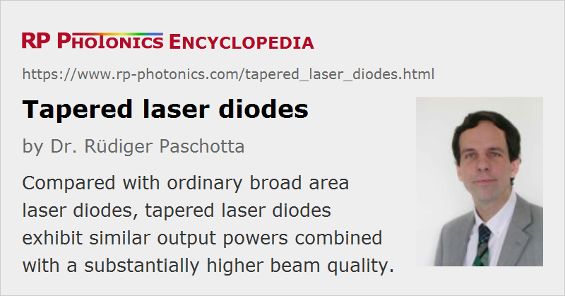

Tapered Laser Diodes
Definition: laser diodes containing a tapered region for achieving a higher beam quality
German: Trapez-Laserdioden
How to cite the article; suggest additional literature
Author: Dr. Rüdiger Paschotta
Single-mode laser diodes can produce laser light with high beam quality, but only with a modest optical power of e.g. some tens of milliwatts. For much higher output powers, one can use broad area laser diodes, having a broad emitting region; these, however, typically have a much reduced beam quality and therefore only a moderate amount of radiance (brightness). For achieving the combination of high output power and high beam quality, tapered laser diodes have been developed. They may be called high brightness laser diodes. While their output powers are similar to those of broad area laser diodes (tentatively somewhat lower), their M2 factor is typically of the order of 2, i.e., not very far from diffraction-limited.
Operation Principle
A tapered laser diode has a semiconductor chip design which is similar to that of a tapered amplifier diode. The most essential difference is that while laser operation is suppressed in a tapered amplifier by minimizing reflections from the end faces, a tapered laser diode exhibits such end reflections, so that it can lase without external optical feedback. The back side is typically equipped with a high reflectivity, while the reflectivity of the front face is relatively small. One may also integrate a Bragg grating into the small waveguide region for selecting the emission wavelength and reducing the emission linewidth.
In contrast to an ordinary broad area laser diode, where the width of the active region is constant along the whole length, a tapered laser diode exhibits substantial additional power losses for light getting back from the output side into the small waveguide. This is associated with the spatial filtering action which improves the beam quality. Some of the returning light might cause optical pumping of regions outside the small waveguide, which is unwanted; in order to prevent that, one may make that region absorbing with additional means (e.g. by applying a reverse bias voltage in that region), or include some additional trenches for eliminating such light. The mentioned additional filter loss does not necessarily have a strong impact on the power conversion efficiency, particularly if the front face reflectivity is small. The details of laser operation with mode filtering are complicated, and one requires sophisticated simulation models to analyze the details and optimize the device design.
In the horizontal direction, the laser resonator of a tapered laser diode can be considered as an unstable resonator, having the characteristic property of high diffraction losses.
Tapered Diode Bars
Some diode bars are made from tapered laser diodes instead of ordinary broad area laser diodes. That results in substantially improved beam quality and an accordingly higher radiance (brightness). While the emission of different emitters is still normally mutually incoherent, the beam divergence in the horizontal direction is substantially reduced.
Further substantial increases of radiance are possible with techniques of beam combining – for example, spectral beam combining, where the different emitters operate at slightly different wavelengths.
External-cavity Diode Lasers with Tapered Amplifiers
It is also possible to fabricate external-cavity diode lasers where the gain medium is a tapered amplifier. See the article on tapered amplifiers for more details.
Suppliers
The RP Photonics Buyer's Guide contains 7 suppliers for tapered laser diodes.
Questions and Comments from Users
Here you can submit questions and comments. As far as they get accepted by the author, they will appear above this paragraph together with the author’s answer. The author will decide on acceptance based on certain criteria. Essentially, the issue must be of sufficiently broad interest.
Please do not enter personal data here; we would otherwise delete it soon. (See also our privacy declaration.) If you wish to receive personal feedback or consultancy from the author, please contact him e.g. via e-mail.
By submitting the information, you give your consent to the potential publication of your inputs on our website according to our rules. (If you later retract your consent, we will delete those inputs.) As your inputs are first reviewed by the author, they may be published with some delay.
Bibliography
| [1] | M. Takahashi and T. Ohtoshi, “Finite-difference time-domain analysis of laser diodes integrated with tapered beam-expanders”, IEEE Photon. Technol. Lett. 11 (5), 524 (1999), doi:10.1109/68.759386 |
| [2] | K. Paschke et al., “Nearly diffraction limited 980-nm tapered diode lasers with an output power of 7.7 W”, IEEE J. Sel. Top. Quantum Electron. 11 (5), 1223 (2005), doi:10.1109/JSTQE.2005.853840 |
| [3] | G. L. Bourdet et al., “High-power, low-divergence, linear array of quasi-diffraction-limited beams supplied by tapered diodes”, Appl. Opt. 46 (25), 6297 (2007), doi:10.1364/AO.46.006297 |
| [4] | J. M. G. Tijero et al., “Enhanced brightness of tapered laser diodes based on an asymmetric epitaxial design”, IEEE Photon. Technol. Lett. 19 (20), 1640 (2007), doi:10.1109/LPT.2007.905083 |
| [5] | C. Fiebig et al., “Tapered diode laser with reverse bias absorber section”, IEEE Photon. Technol. Lett. 21 (23), 1755 (2009), doi:10.1109/LPT.2009.2032781 |
| [6] | O. B. Jensen, “1.5 W green light generation by single-pass second harmonic generation of a single-frequency tapered diode laser”, Opt. Express 17 (8), 6532 (2009), doi:10.1364/OE.17.006532 |
| [7] | D. Vijayakumar et al., “Spectral beam combining of a 980 nm tapered diode laser bar”, Opt. Express 18 (2), 893 (2010), doi:10.1364/OE.18.000893 |
| [8] | D. Vijayakumar et al., “Narrow line width operation of a 980 nm gain guided tapered diode laser bar”, Opt. Express 19 (2), 1131 (2011), doi:10.1364/OE.19.001131 |
| [9] | F. Feng, “Free space communications with beam steering a two-electrode tapered laser diode using liquid-crystal SLM”, J. Lightwave Technol. 31 (12), 2001 (2013), doi:10.1109/JLT.2013.2262372 |
| [10] | E. Beyatli, “Efficient Tm:YAG and Tm:LuAG lasers pumped by 681 nm tapered diodes”, Appl. Opt. 58 (11), 2973 (2019), doi:10.1364/AO.58.002973 |
| [11] | E. Beyatli, “Tapered diode-pumped continuous-wave alexandrite laser”, J. Opt. Soc. Am. B 30 (12), 3184 (2013), doi:10.1364/JOSAB.30.003184 |
| [12] | Y. Li et al., “The output power and beam divergence behaviors of tapered terahertz quantum cascade lasers”, Opt. Express 21 (13), 15998 (2013), doi:10.1364/OE.21.015998 |
See also: tapered amplifiers, broad area laser diodes, diode bars, high brightness laser diodes
and other articles in the category lasers
|  |
If you like this page, please share the link with your friends and colleagues, e.g. via social media:
These sharing buttons are implemented in a privacy-friendly way!